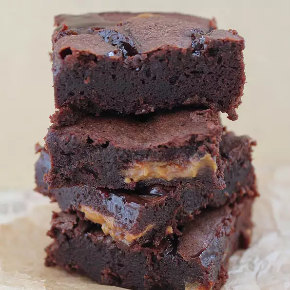

Dulce de Leche Brownies

Description
A moist and gooey chocolate brownie with pockets of dulce de leche inside and caramel on top. Truly amazing! If you have enough willpower, try and leave them overnight. They are even better and more moist the next day.
Ingredients
- cooking spray
- ¼ cup butter
- 1 (1 ounce) square dark chocolate, chopped
- ½ cup white sugar
- ½ cup brown sugar
- ½ cup all-purpose flour
- 6 tablespoons unsweetened cocoa powder
- 2 teaspoons vanilla extract
- ¼ teaspoon salt
- 2 eggs
- ½ cup dulce de leche
- 2 tablespoons caramel dessert topping, or to taste
Steps
- Preheat the oven to 350 degrees F (175 degrees C). Grease an 8-inch square baking pan with cooking spray.
- Place butter in the top of a double boiler over simmering water. Stir until melted. Add chocolate and stir until melted and combined. Remove from heat.
- Stir white sugar, brown sugar, flour, cocoa powder, vanilla extract, and salt into the melted chocolate mixture. Stir in eggs with a spoon or spatula until just combined; try not to use more than 30 or 40 strokes.
- Pour a little over 1/2 of the brownie batter into the prepared pan. Drop small spoonfuls of the dulce de leche evenly over the top. Gently drag a knife through the dulce de leche to create swirls. Cover with remaining brownie batter. Drizzle caramel on top in a swirling pattern.
- in the preheated oven until edges start pulling away from the sides of the pan, 25 to 30 minutes. Let the brownies cool completely before cutting them into squares.